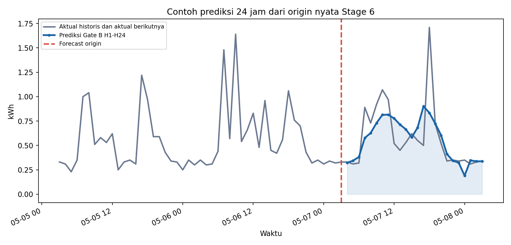
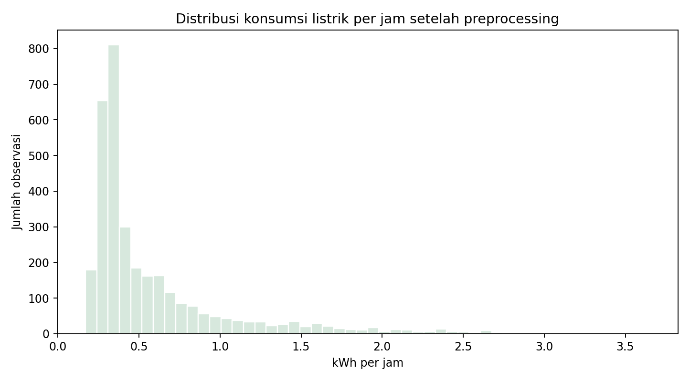
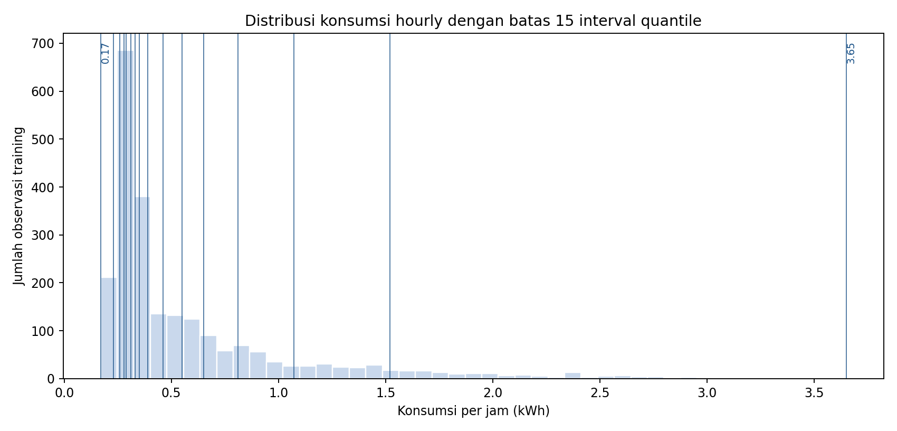
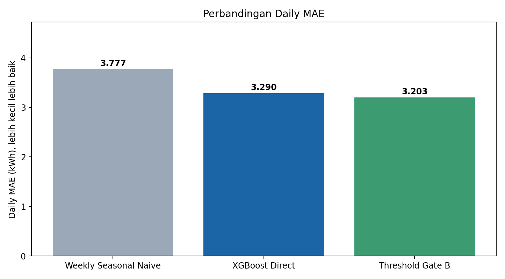
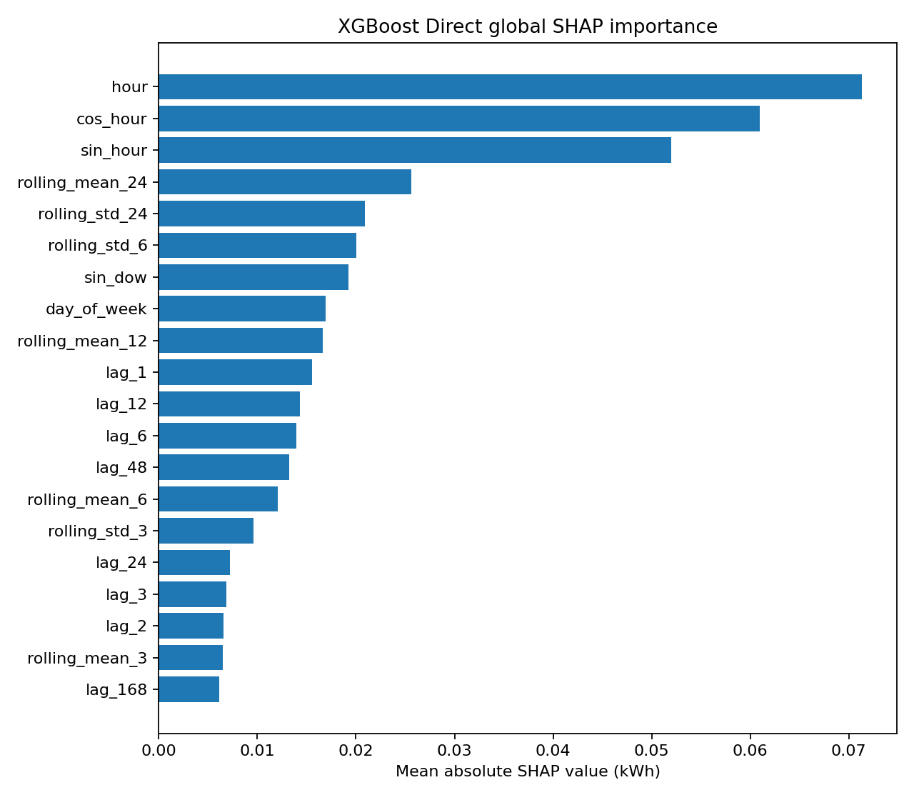
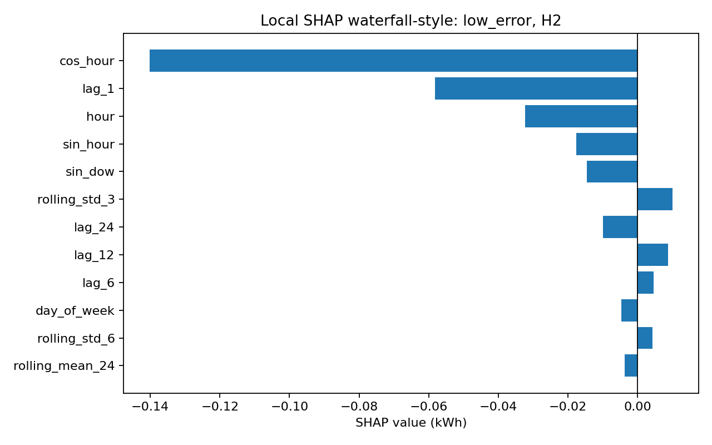
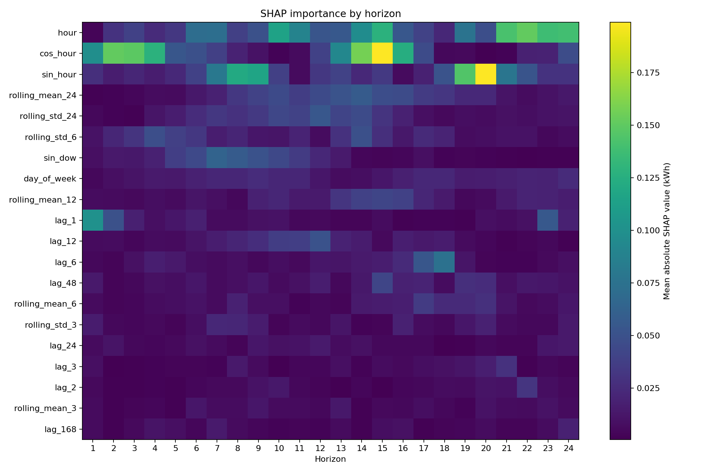
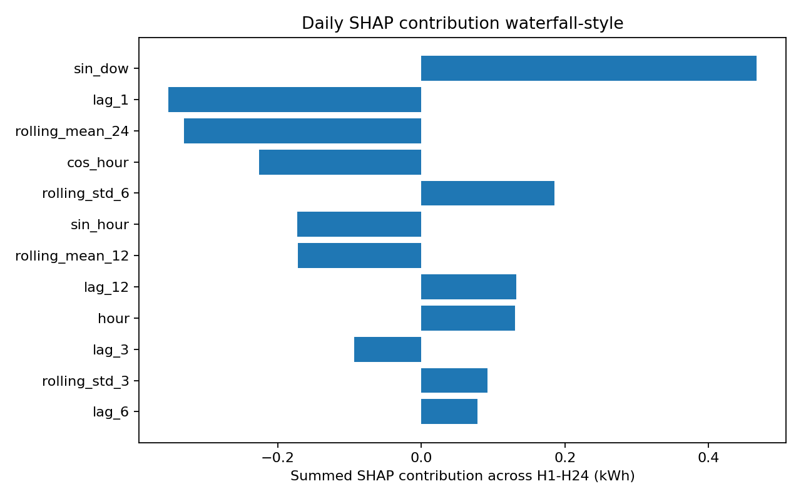

Halaman 01
Bisakah kita memperkirakan penggunaan listrik rumah untuk besok?
Model memprediksi konsumsi energi setiap jam untuk 24 jam berikutnya. Seluruh hasilnya dijumlahkan untuk mengetahui perkiraan total energi selama satu hari. Contoh origin nyata: 2016-05-07 03:00:00.

Kalimat untuk menjelaskan kepada dosen
Penelitian ini mencoba menjawab apakah data konsumsi listrik sebelumnya cukup untuk memperkirakan pemakaian 24 jam ke depan. Model menghasilkan 24 prediksi per jam, lalu totalnya dijumlahkan sebagai prediksi konsumsi harian. Angka pada grafik berasal dari forecast origin Stage 6, bukan contoh simulasi.
Pesan utama: Target penelitian adalah prediksi H1-H24 dan total energi harian dari satu rumah.
Untuk melakukan prediksi tersebut, kita perlu memahami terlebih dahulu seperti apa data yang digunakan.
Halaman 02
Seperti apa data konsumsi listrik yang kita gunakan?
Dataset berasal dari UCI Appliances Energy Prediction, satu rumah, interval awal 10 menit, target Appliances dalam Wh. Setelah preprocessing, enam pencatatan 10 menit dijumlahkan menjadi hourly kWh dengan 3.289 observasi lengkap.
| waktu | Appliances Wh |
|---|---|
| 2016-01-11 17:00:00 | 60 |
| 2016-01-11 17:10:00 | 60 |
| 2016-01-11 17:20:00 | 50 |
| 2016-01-11 17:30:00 | 50 |
| 2016-01-11 17:40:00 | 60 |
| 2016-01-11 17:50:00 | 50 |
Enam pencatatan = 330 Wh = 0.330 kWh

Lihat penjelasan teknis
Agregasi target memakai penjumlahan, bukan rata-rata, karena Appliances adalah energi per interval 10 menit. Variabel suhu, kelembapan, dan cuaca memakai rata-rata per jam.
Pesan utama: Data modeling memakai konsumsi per jam dalam kWh, bukan baris 10 menit mentah.
Setelah data menjadi per jam, kita perlu mencari cara agar model dapat mempelajari pola perubahan konsumsi listrik.
Halaman 03
Bagaimana FTS mempelajari pola konsumsi listrik?
FTS mengubah angka konsumsi menjadi kelompok fuzzy, lalu membaca perubahan kelompok dari waktu ke waktu. Konfigurasi terbaik Stage 2 adalah Weighted FTS order 1, quantile partition, 15 interval.

| state | batas bawah | batas atas | lebar |
|---|---|---|---|
| A1 | 0.170 | 0.230 | 0.060 |
| A2 | 0.230 | 0.260 | 0.030 |
| A3 | 0.260 | 0.280 | 0.020 |
| A4 | 0.280 | 0.290 | 0.010 |
| A5 | 0.290 | 0.310 | 0.020 |
| A6 | 0.310 | 0.330 | 0.020 |
| A7 | 0.330 | 0.350 | 0.020 |
| A8 | 0.350 | 0.390 | 0.040 |
| A9 | 0.390 | 0.460 | 0.070 |
| A10 | 0.460 | 0.550 | 0.090 |
| A11 | 0.550 | 0.650 | 0.100 |
| A12 | 0.650 | 0.810 | 0.160 |
| A13 | 0.810 | 1.072 | 0.262 |
| A14 | 1.072 | 1.520 | 0.448 |
| A15 | 1.520 | 3.650 | 2.130 |
Kalimat untuk menjelaskan kepada dosen
FTS tidak langsung bekerja pada angka mentah saja. Angka konsumsi dikelompokkan ke interval fuzzy, misalnya A1 sampai A15. Quantile dipakai karena sebagian besar konsumsi berada pada nilai kecil, sehingga daerah yang padat dibuat lebih rinci.
Pesan utama: Quantile membuat interval rendah lebih sempit dan interval tinggi lebih lebar sesuai kepadatan data training.
FTS mempelajari perubahan kelompok konsumsi. Namun, kita juga mencoba algoritma machine learning yang mempelajari langsung angka konsumsi listrik.
Halaman 04
Bagaimana XGBoost memprediksi penggunaan listrik?
XGBoost mempelajari hubungan antara fitur historis, fitur waktu target, dan konsumsi yang akan diprediksi. Contoh di bawah memakai forecast origin yang sama dengan halaman pertama.
| fitur | nilai |
|---|---|
| lag_1 | 0.3200 |
| lag_24 | 0.3500 |
| lag_168 | 0.3100 |
| rolling_mean_24 | 0.6075 |
| rolling_std_24 | 0.3627 |
| hour | 3.0000 |
| sin_hour | 0.7071 |
| cos_hour | 0.7071 |
→ pembentukan fitur
→ XGBoost Direct
→ prediksi H1-H24
Untuk H1 pada origin ini, prediksi XGBoost = 0.324 kWh, aktual = 0.330 kWh, jam target = 4.
Lihat penjelasan teknis
Fitur lag dan rolling berasal dari histori sebelum origin. Fitur hour/sin_hour/cos_hour mewakili jam target, sehingga tidak boleh diperlakukan sebagai data konsumsi historis.
Pesan utama: XGBoost membaca pola numerik dari konsumsi sebelumnya dan informasi waktu target.
Setelah mencoba kedua metode, pertanyaan berikutnya adalah bagaimana FTS dan XGBoost dapat digunakan bersama.
Halaman 05
Bagaimana kedua metode digabungkan menjadi hybrid?
Threshold-Gated Hybrid memilih expert berdasarkan prediksi XGBoost. Aturannya: gunakan residual FTS-XGBoost ketika prediksi XGBoost ≤ 0.310 kWh; selain itu gunakan XGBoost Direct.
| contoh | origin | horizon | xgb_prediction | residual_prediction | threshold | kondisi | prediksi_final |
|---|---|---|---|---|---|---|---|
| Specialist dipilih | 2016-05-07 03:00:00 | 21 | 0.308 | 0.190 | 0.310 | True | 0.190 |
| XGBoost tetap dipakai | 2016-05-07 03:00:00 | 1 | 0.324 | 0.313 | 0.310 | False | 0.324 |
Sebagian besar prediksi tetap memakai XGBoost Direct. Specialist aktif 33 dari 480 prediksi jam atau 6.88%.
Pesan utama: Gate B adalah aturan threshold rendah 0,31 kWh, berbeda dari threshold high/spike regime.
Setelah kedua metode digabungkan, kita perlu melihat apakah hasil prediksinya menjadi lebih baik.
Halaman 06
Apakah model hybrid menghasilkan prediksi yang lebih baik?
Pada evaluasi 20 origin non-overlap, hybrid menurunkan kesalahan prediksi total konsumsi harian sekitar 2.65% dibandingkan XGBoost Direct. Namun XGBoost Direct tetap lebih baik pada Hourly MAE.

Mengapa hasil per jam dan per hari bisa berbeda?
Hourly MAE menghitung kesalahan per jam. Daily MAE menjumlahkan 24 prediksi dahulu, lalu menghitung kesalahan total harian. Gate B sedikit lebih baik pada Daily MAE, tetapi XGBoost Direct lebih baik pada Hourly MAE. Uji Wilcoxon Stage 5 memberi p-value 0.0609, sehingga peningkatan belum signifikan pada taraf 5%.
Pesan utama: Hybrid memberi perbaikan Daily MAE kecil, tetapi belum cukup kuat untuk diklaim unggul di semua metrik.
Setelah mengetahui model mana yang memberikan hasil lebih baik, kita juga ingin mengetahui informasi apa yang digunakan model untuk membuat prediksi.
Halaman 07
Informasi apa yang paling digunakan XGBoost?
SHAP global menunjukkan fitur yang paling banyak berkontribusi terhadap output XGBoost Direct pada audit Stage 6.

Fitur hour, cos_hour, dan sin_hour memberi tahu model posisi jam target dalam siklus 24 jam. rolling_mean_24 dan rolling_std_24 memberi ringkasan konsumsi sebelumnya.
SHAP menjelaskan kontribusi fitur pada output model, bukan bukti sebab-akibat. Fitur waktu juga saling berkaitan.
Pesan utama: Model banyak memakai informasi waktu target dan ringkasan konsumsi historis.
SHAP tidak hanya dapat menjelaskan model secara keseluruhan, tetapi juga dapat menjelaskan alasan di balik satu prediksi tertentu.
Halaman 08
Mengapa model menghasilkan prediksi sebesar itu?
Contoh local explanation dari Stage 6: origin 2016-05-19 03:00:00, horizon 2, prediksi XGBoost 0.330 kWh, aktual 0.330 kWh, base value SHAP 0.579.

| arah | fitur | nilai fitur | SHAP |
|---|---|---|---|
| menaikkan | rolling_std_3 | 0.0058 | 0.0101 |
| menaikkan | lag_12 | 0.5000 | 0.0088 |
| menaikkan | lag_6 | 0.4900 | 0.0047 |
| menaikkan | rolling_std_6 | 0.0731 | 0.0043 |
| menaikkan | lag_48 | 0.3200 | 0.0036 |
| menurunkan | cos_hour | 0.7071 | -0.1402 |
| menurunkan | lag_1 | 0.3000 | -0.0582 |
| menurunkan | hour | 3.0000 | -0.0323 |
| menurunkan | sin_hour | 0.7071 | -0.0175 |
| menurunkan | sin_dow | 0.4339 | -0.0145 |
Kalimat untuk menjelaskan kepada dosen
SHAP local membantu menjelaskan satu prediksi tertentu. Nilai dasar model bergerak naik atau turun mengikuti kontribusi fitur, sampai menjadi prediksi akhir.
Pesan utama: SHAP local membuat alasan satu prediksi lebih mudah dijelaskan tanpa mengubah model.
Dari seluruh pengujian dan interpretasi tersebut, kita dapat merangkum hasil utama penelitian.
Halaman 09
Apa yang kita pelajari dari penelitian ini?
Kesimpulan penelitian perlu disampaikan dengan hati-hati: ada perbaikan harian dari hybrid, tetapi ada juga keterbatasan yang harus tetap ditulis.
- XGBoost mampu mempelajari pola konsumsi energi dengan cukup baik.
- Penggabungan FTS dan XGBoost melalui threshold menurunkan Daily MAE sekitar 2,65% pada pengujian yang digunakan.
- SHAP menunjukkan bahwa informasi waktu dan konsumsi historis memiliki kontribusi penting dalam prediksi.
Keterbatasan
- Peningkatan hybrid masih relatif kecil.
- Hybrid tidak unggul untuk Hourly MAE.
- Hasil belum menunjukkan keunggulan statistik yang konklusif.
- Dataset berasal dari satu rumah.
Proposed method: Threshold-Gated Hybrid Weighted FTS–XGBoost with SHAP Explainability.
Pesan utama: Penelitian siap dijelaskan sebagai proses bertahap dari data, model, hybrid, hasil, sampai interpretasi SHAP.
Jika dosen ingin detail angka, buka Lampiran Teknis dari tombol kanan atas.
Lampiran
Lampiran Teknis
Bagian ini menyimpan detail teknis lama agar alur presentasi utama tetap ringan.
Perbandingan semua model Stage 5
| model | Hourly MAE | Hourly RMSE | Daily MAE | Daily RMSE | Daily MAPE | windows |
|---|---|---|---|---|---|---|
| Oracle Three-Expert | 0.1296143090174378 | 0.23515469485194393 | 2.0228043831760973 | 2.601374454080228 | 15.315664506499877 | 20 |
| Stage 4 Threshold Gate B | 0.21995761514349538 | 0.3574147829776461 | 3.202801892355322 | 4.101615201452107 | 23.21234222841218 | 20 |
| Daily-Optimized Regime Gate | 0.21995761514349538 | 0.3574147829776461 | 3.202801892355322 | 4.101615201452107 | 23.21234222841218 | 20 |
| XGBoost Direct | 0.21333313161383075 | 0.35583138815307713 | 3.289850212037563 | 4.153938949568983 | 24.089972557296228 | 20 |
| Residual FTS-XGBoost | 0.2255142343275733 | 0.3696091988198036 | 3.298871843826744 | 4.715895282672428 | 20.660584258077876 | 20 |
| Weekly Seasonal Naive | 0.24983333333333332 | 0.46868255070285403 | 3.7769999999999997 | 5.712565098097352 | 26.59585928989025 | 20 |
| Soft Regime Mixture-of-Experts | 0.2612737720227146 | 0.3871021557516125 | 3.860865197462553 | 4.614337747677723 | 31.04512491777203 | 20 |
| Three-Expert Hard Gate | 0.2614461384993719 | 0.40229526051932946 | 3.8664604640387217 | 4.769659642839177 | 30.973229784061264 | 20 |
| Probability Gate | 0.25263494669476827 | 0.4046365098299073 | 3.99747943946453 | 4.868835771751134 | 32.255910339588844 | 20 |
| XGB-FTS Residual | 0.46525465210212263 | 0.521694388330064 | 9.015503127207069 | 9.925147542016024 | 79.06274262444248 | 20 |
Model Stage 1-2 dan Stage 4
| model | Hourly MAE | Hourly RMSE | Daily MAE | Daily RMSE | Daily MAPE | windows_evaluated |
|---|---|---|---|---|---|---|
| Last Value | 0.26002083333333326 | 0.48825347754351256 | 6.0295000000000005 | 7.4871306252796215 | 39.20481810749596 | 20 |
| Daily Seasonal | 0.2645416666666667 | 0.47630872341371194 | 4.255000000000001 | 6.020984138826476 | 27.82629992723936 | 20 |
| Weekly Seasonal | 0.24983333333333332 | 0.46868255070285403 | 3.777000000000001 | 5.712565098097351 | 26.595859289890267 | 20 |
| model | Hourly MAE | Hourly RMSE | Daily MAE | Daily RMSE | Daily MAPE | windows_evaluated |
|---|---|---|---|---|---|---|
| 0.21333313161383075 | 0.35583138815307713 | 3.289850212037564 | 24.089972557296228 | |||
| 0.21383142058551308 | 0.3563546614271514 | 3.3414014363288884 | 24.663513203268945 | |||
| 0.24983333333333332 | 0.46868255070285403 | 3.777000000000001 | 26.595859289890267 | |||
| 0.2645416666666667 | 0.47630872341371194 | 4.255000000000001 | 27.82629992723936 | |||
| 0.3494667089416258 | 0.44027498087954886 | 5.286461222539418 | 44.33842822683404 | |||
| 0.26002083333333326 | 0.48825347754351256 | 6.0295000000000005 | 39.20481810749596 |
| model | Hourly MAE | Hourly RMSE | Daily MAE | Daily RMSE | Daily MAPE | windows |
|---|---|---|---|---|---|---|
| Oracle Gate | 0.16890844371048308 | 0.3235377673884059 | 2.8471719292062208 | 3.8411090098831804 | 19.30021537744821 | 20 |
| Best Threshold Gated Hybrid | 0.21995761514349538 | 0.3574147829776461 | 3.202801892355322 | 4.101615201452107 | 23.21234222841218 | 20 |
| XGBoost Direct | 0.21333313161383075 | 0.35583138815307713 | 3.289850212037563 | 4.153938949568983 | 24.089972557296228 | 20 |
| Residual FTS-XGBoost | 0.2255142343275733 | 0.3696091988198036 | 3.298871843826744 | 4.715895282672428 | 20.660584258077876 | 20 |
| Feature-based FTS-XGBoost | 0.21383142058551308 | 0.3563546614271514 | 3.341401436328888 | 4.181606802824035 | 24.663513203268945 | 20 |
| Weekly Seasonal Naive | 0.24983333333333332 | 0.46868255070285403 | 3.7769999999999997 | 5.712565098097352 | 26.59585928989025 | 20 |
| Best Learned Gated Hybrid | 0.22993113899578518 | 0.4273883362509783 | 3.827352019499693 | 5.052731344830436 | 25.17563788234522 | 9 |
| XGBoost-FTS Residual Correction | 0.46525465210212263 | 0.521694388330064 | 9.015503127207069 | 9.925147542016024 | 79.06274262444248 | 20 |
Oracle, threshold, soft/probability/learned gate
| model | Hourly MAE | Hourly RMSE | Hourly MAPE | Hourly sMAPE | Daily MAE | Daily RMSE | Daily MAPE | Daily sMAPE | windows | Notes |
|---|---|---|---|---|---|---|---|---|---|---|
| Oracle Three-Expert | 0.1296143090174378 | 0.23515469485194393 | 23.38355955395552 | 19.45731009414004 | 2.0228043831760973 | 2.601374454080228 | 15.315664506499877 | 14.354964432531137 | 20 | Upper bound using actual target |
| model | Hourly MAE | Hourly RMSE | Hourly MAPE | Hourly sMAPE | Daily MAE | Daily RMSE | Daily MAPE | Daily sMAPE | windows | Notes |
|---|---|---|---|---|---|---|---|---|---|---|
| Gate A Low/Medium predicted -> Residual | 0.24064856065592724 | 0.3646234926350285 | 43.51391318163803 | 40.58938956536047 | 3.2429555447119682 | 4.2677098620333895 | 22.26025683750055 | 22.737284215600155 | 20 | Threshold gate using XGBoost predicted value |
| Gate B Low predicted -> Residual | 0.21995761514349538 | 0.3574147829776461 | 38.18473176964021 | 32.806250473910055 | 3.202801892355322 | 4.101615201452107 | 23.21234222841218 | 22.297078305746904 | 20 | Threshold gate using XGBoost predicted value |
| Gate C Normal predicted -> Feature Hybrid | 0.21524968581398327 | 0.35772929203523074 | 36.71380968499981 | 30.280267444522096 | 3.358365868926048 | 4.1990204336569095 | 24.833535807573725 | 23.401421968494272 | 20 | Threshold gate using XGBoost predicted value |
| model | Hourly MAE | Hourly RMSE | Hourly MAPE | Hourly sMAPE | Daily MAE | Daily RMSE | Daily MAPE | Daily sMAPE | windows | Notes |
|---|---|---|---|---|---|---|---|---|---|---|
| Soft Regime Mixture-of-Experts | 0.2612737720227146 | 0.3871021557516125 | 49.80154174877564 | 37.68338560825773 | 3.860865197462553 | 4.614337747677723 | 31.04512491777203 | 26.428347400619305 | 20 |
| model | Hourly MAE | Hourly RMSE | Hourly MAPE | Hourly sMAPE | Daily MAE | Daily RMSE | Daily MAPE | Daily sMAPE | windows | Notes |
|---|---|---|---|---|---|---|---|---|---|---|
| Probability Gate | 0.25263494669476827 | 0.4046365098299073 | 46.55015267146453 | 34.119464322962386 | 3.99747943946453 | 4.868835771751134 | 32.255910339588844 | 27.043133104158173 | 20 |
| model | Hourly MAE | Hourly RMSE | Hourly MAPE | Hourly sMAPE | Daily MAE | Daily RMSE | Daily MAPE | Daily sMAPE | windows | Notes | gate_accuracy | gate_balanced_accuracy |
|---|---|---|---|---|---|---|---|---|---|---|---|---|
| Learned Gate | 0.22993113899578518 | 0.4273883362509783 | 31.709276094857486 | 30.068271445220024 | 3.827352019499693 | 5.052731344830436 | 25.17563788234522 | 26.16572210117526 | 9 | DecisionTree gate evaluated on later non-overlap origins | 0.4861111111111111 | 0.4598506069094304 |
Kompleksitas vs manfaat
| Model | Daily MAE | Improvement vs XGB | Number of Models | Gate Needed | Complexity |
|---|---|---|---|---|---|
| Oracle Three-Expert | 2.0228043831760973 | 38.51378473783835 | 3 | Oracle | Theoretical |
| Stage 4 Threshold Gate B | 3.202801892355322 | 2.645966049266653 | 3 | Yes | High |
| Daily-Optimized Regime Gate | 3.202801892355322 | 2.645966049266653 | 3 | Yes | High |
| XGBoost Direct | 3.289850212037563 | 0.0 | 1 | No | Low |
| Residual FTS-XGBoost | 3.298871843826744 | -0.27422621723539226 | 2 | No | Medium |
| Weekly Seasonal Naive | 3.7769999999999997 | -14.80765860342077 | 1 | No | Low |
| Soft Regime Mixture-of-Experts | 3.860865197462553 | -17.356868812313884 | 3 | Yes | High |
| Three-Expert Hard Gate | 3.8664604640387217 | -17.52694544849919 | 3 | Yes | High |
| Probability Gate | 3.99747943946453 | -21.509466444330847 | 3 | Yes | High |
| XGB-FTS Residual | 9.015503127207069 | -174.03992723496467 | 2 | No | Medium |
Reproduction check per origin
| forecast_origin | actual_daily_kWh | xgb_daily_kWh | gate_daily_kWh | xgb_daily_abs_error | gate_daily_abs_error | specialist_count |
|---|---|---|---|---|---|---|
| 2016-05-07 03:00:00 | 14.02 | 13.508000135421753 | 13.38941981183558 | 0.5119998645782466 | 0.6305801881644193 | 1 |
| 2016-05-08 03:00:00 | 9.870000000000001 | 13.584977358579636 | 13.584977358579636 | 3.7149773585796346 | 3.7149773585796346 | 0 |
| 2016-05-09 03:00:00 | 12.24 | 16.004471987485886 | 15.880226778855615 | 3.7644719874858854 | 3.640226778855615 | 1 |
| 2016-05-10 03:00:00 | 9.489999999999998 | 12.014040172100067 | 11.76146147225438 | 2.5240401721000687 | 2.2714614722543818 | 2 |
| 2016-05-11 03:00:00 | 10.68 | 14.557610392570496 | 14.189446711154854 | 3.877610392570496 | 3.5094467111548546 | 3 |
| 2016-05-12 03:00:00 | 10.43 | 14.295979857444763 | 14.295979857444763 | 3.8659798574447635 | 3.8659798574447635 | 0 |
| 2016-05-13 03:00:00 | 24.38 | 15.823069632053375 | 15.696305292716318 | 8.556930367946624 | 8.683694707283681 | 1 |
| 2016-05-14 03:00:00 | 14.09 | 16.325661778450012 | 16.325661778450012 | 2.2356617784500123 | 2.2356617784500123 | 0 |
| 2016-05-15 03:00:00 | 15.129999999999999 | 12.77403250336647 | 12.77403250336647 | 2.3559674966335287 | 2.3559674966335287 | 0 |
| 2016-05-16 03:00:00 | 14.330000000000002 | 14.572637230157852 | 14.335117852430924 | 0.24263723015785033 | 0.005117852430922554 | 2 |
| 2016-05-17 03:00:00 | 9.520000000000001 | 12.269113510847092 | 12.048893457394227 | 2.7491135108470903 | 2.5288934573942257 | 2 |
| 2016-05-18 03:00:00 | 11.8 | 11.610429555177689 | 11.359515940886125 | 0.1895704448223121 | 0.4404840591138761 | 2 |
| 2016-05-19 03:00:00 | 10.040000000000001 | 12.66170060634613 | 12.18326128161073 | 2.6217006063461294 | 2.1432612816107284 | 5 |
| 2016-05-20 03:00:00 | 9.36 | 15.553032666444778 | 15.396359209923176 | 6.193032666444779 | 6.036359209923177 | 3 |
| 2016-05-21 03:00:00 | 23.380000000000003 | 15.818556040525436 | 15.818556040525436 | 7.561443959474566 | 7.561443959474566 | 0 |
| 2016-05-22 03:00:00 | 15.85 | 13.883235156536102 | 13.89401677952173 | 1.9667648434638973 | 1.9559832204782701 | 3 |
| 2016-05-23 03:00:00 | 11.93 | 13.945061683654785 | 13.69529423687993 | 2.0150616836547854 | 1.7652942368799298 | 2 |
| 2016-05-24 03:00:00 | 13.83 | 12.418677985668182 | 12.182963049154862 | 1.4113220143318177 | 1.6470369508451377 | 2 |
| 2016-05-25 03:00:00 | 12.1 | 12.805168092250824 | 12.442351394506371 | 0.7051680922508243 | 0.3423513945063714 | 3 |
| 2016-05-26 03:00:00 | 21.240000000000002 | 12.506450086832047 | 12.518184124371658 | 8.733549913167955 | 8.721815875628344 | 1 |
Horizon target-hour audit
| horizon | origin_hour | target_hour | n |
|---|---|---|---|
| 1 | 3 | 4 | 20 |
| 2 | 3 | 5 | 20 |
| 3 | 3 | 6 | 20 |
| 4 | 3 | 7 | 20 |
| 5 | 3 | 8 | 20 |
| 6 | 3 | 9 | 20 |
| 7 | 3 | 10 | 20 |
| 8 | 3 | 11 | 20 |
| 9 | 3 | 12 | 20 |
| 10 | 3 | 13 | 20 |
| 11 | 3 | 14 | 20 |
| 12 | 3 | 15 | 20 |
| 13 | 3 | 16 | 20 |
| 14 | 3 | 17 | 20 |
| 15 | 3 | 18 | 20 |
| 16 | 3 | 19 | 20 |
| 17 | 3 | 20 | 20 |
| 18 | 3 | 21 | 20 |
| 19 | 3 | 22 | 20 |
| 20 | 3 | 23 | 20 |
| 21 | 3 | 0 | 20 |
| 22 | 3 | 1 | 20 |
| 23 | 3 | 2 | 20 |
| 24 | 3 | 3 | 20 |
SHAP heatmap dan dekomposisi


Audit reproducibility dan additivity
XGB max additivity error: 0.00000155
Residual max additivity error: 0.00000054
Daily SHAP max reconstruction error: 0.00000292
Gate decomposition max error: 0.00000000
File tidak dapat direproduksi
Audit Stage 6 mencatat tidak ada file yang tidak dapat direproduksi.